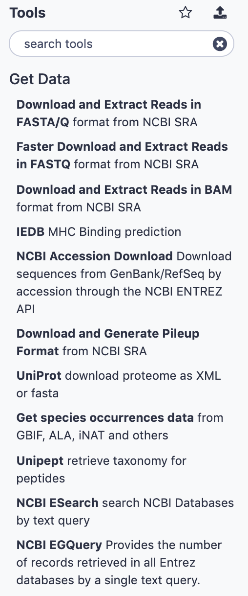
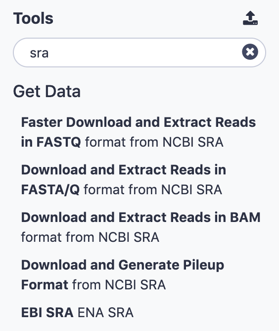
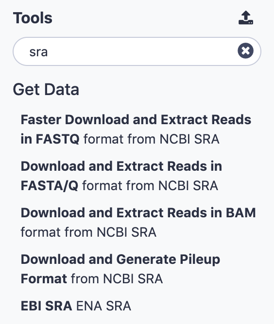
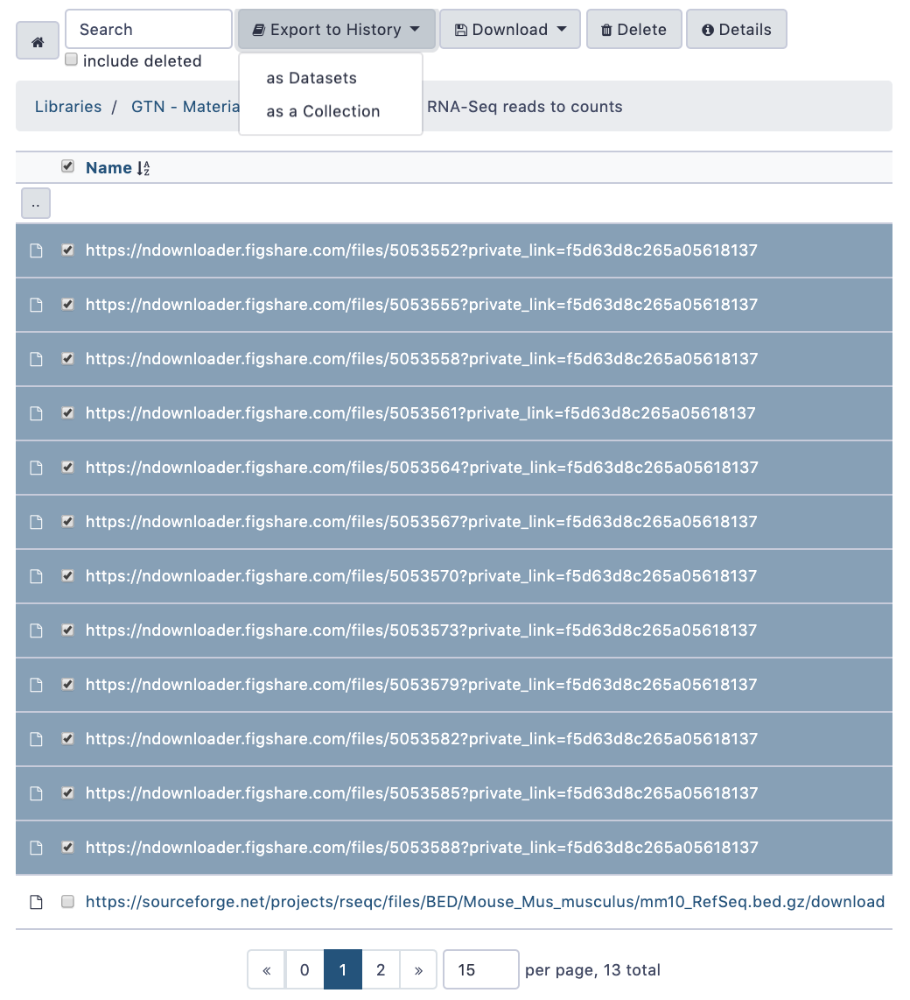
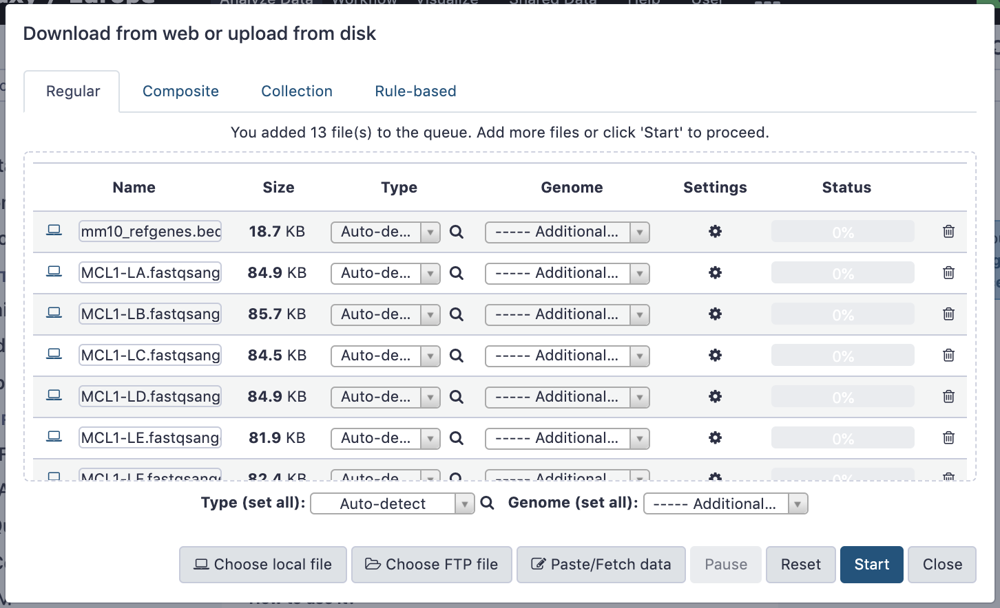
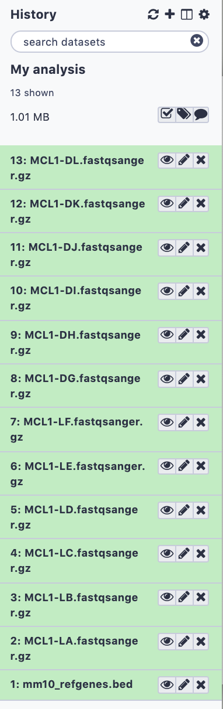
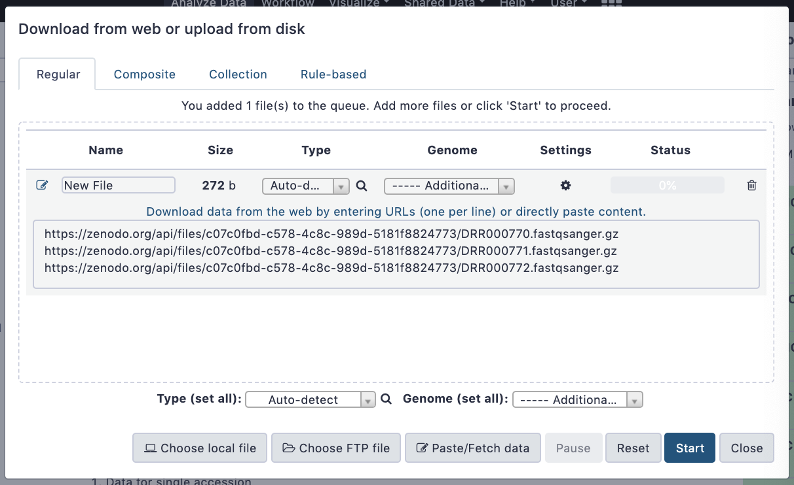
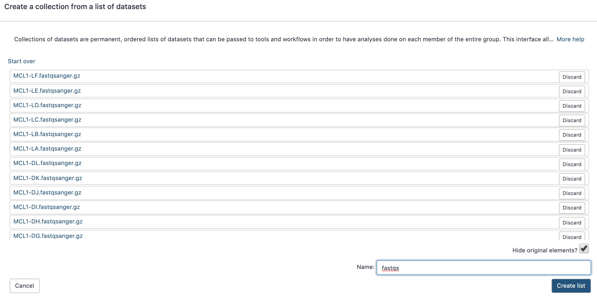
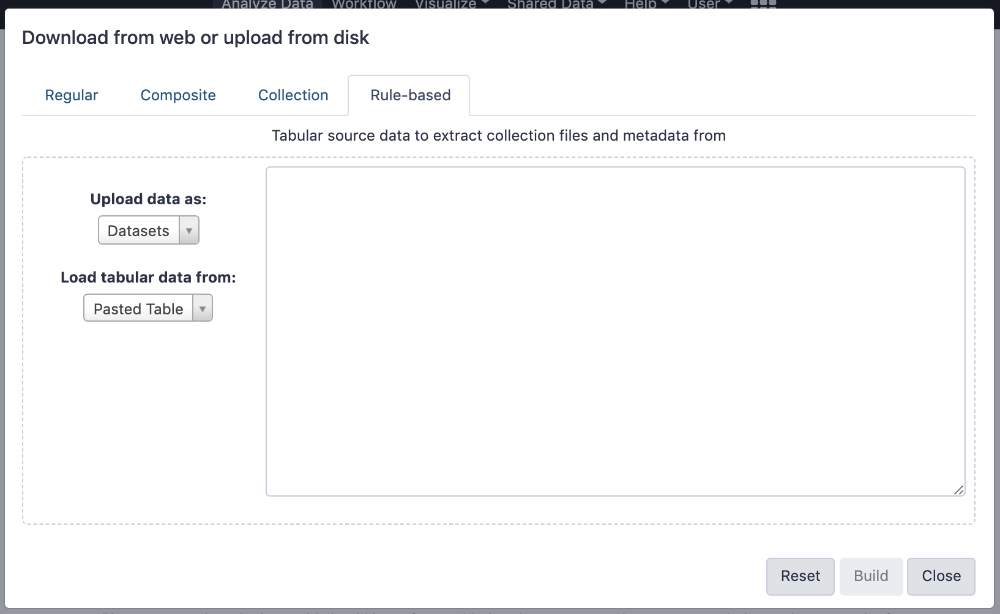

Getting data into Galaxy
Contributors
 Anne Pajon
Anne Pajon  Dave Clements
Dave Clements  Maria Doyle
Maria Doyle  Saskia Hiltemann
Saskia Hiltemann
Questions
How do I get my data into Galaxy?
How do I get public data into Galaxy?
Getting data into Galaxy
Speaker Notes
-> Pressing P will toggle presenter mode.
Many ways to get data into your workspace
- Import using Get Data sources e.g. UCSC, SRA
- Import from a Galaxy Data Library
- Import using Upload File
- Import from your computer
- Directly enter text
- Import from a URL
- Import using FTP
- Import directly into Collection
- Import using Rule Builder
Speaker Notes
- To do analysis in Galaxy you first need data to work on.
- There are many ways and sources for getting data into your history.
- This tutorial will cover all of the techniques listed here.
Best method depends on where the data is, and how big it is

.footnote[Source: Galaxy Community Hub]
1. The Get Data toolbox section
- Click on the Get Data toolbox in the toolbox (the left panel)

.pull-right[.image-75[]]
- Expands to show data sources
- E.g. UCSC, NCBI, Uniprot, ..
- The specific data sources available on your Galaxy instance are determine by the server’s administrator
- All of these data sources can bring datasets (files) into your Galaxy workspace (history)
Speaker Notes
This shows the list of data sources that were available on usegalaxy.org in mid 2017.
Two large data sources you can access through Galaxy are UCSC and SRA
.pull-right[ ]
.pull-left[]
]
.pull-left[]
2. Import from Shared Data Library
.pull-left[
-
Top menu bar -> Shared Data -> Data Libraries
-
Configured by a Galaxy Administator
-
Can be imported directly into your history
-
Example: all GTN tutorial data]
.pull-right[ ]
]
You can select the files you want and send to History as datasets or collection
.image-75[]
3. Upload from your computer
.image-50[ ]
]

Speaker Notes
- The Upload File data source can import data:
- from your computer
- by directly entering text
- using a URL
- and via FTP
This is probably the most commonly used tool for bringing data into Galaxy, and it is installed on almost every Galaxy server.
Choose files

Speaker Notes
- Drag and drop is supported
- as is the standard file selection using your browser.
Set Metadata
- Datatype (e.g. FastQ, VCF, BAM, tabular, ..)
- Galaxy will autodetect by default (sometimes guesses wrong)
- Genome Build (e.g. hg19, mm9, ..)
- must be set manually (can be done later as well)

Speaker Notes
- Here we have imported 13 files
- one with genome annotation in GTF format
- 12 paired end read files from an RNA-Seq experiment*
-
could import them now and have Galaxy guess at their file types.
- From UC Davis Training Material.
- Can be set for all files at once:

- Or per file:

Speaker Notes
- Here we are manually setting the first dataset’s datatype to GTF, a common genome annotation format.
Start upload process:
- Once everything is ready, click the Start button

Speaker Notes
- Data transfer does not start until you click Start.
You can then close the form

Speaker Notes
All the items will appear in your history

and are ready to use when green.
Directly enter text
- Sometimes it’s useful to file content directly.
- only works if your dataset is tiny
- choose Paste/Fetch data

Enter the data by typing (or pasting) it in the input box:

You can also set the datatype and build. Click Start, and then Close, and the new item shows up as Pasted Entry in your history.
Import using URL
The data might already be available on a web server somewhere. To avoid downloading data to your computer and uploading to Galaxy in two steps, you can instruct Galaxy to directly fetch the data from a given URL.
Select Paste/Fetch data
Enter the URLs (one per line) into the input box:

Click Start, and then Close, and the new items show up in your history with the URL as their name.
Import using FTP
- Why use FTP?
- Older Galaxies did not support uploading files larger than 2GB in size
- Many people are very comfortable using FTP to upload large datasets and you can sometimes resume interrupted uploads.
- How to use FTP
- The Galaxy server’s administrator must have enabled FTP on the server
- You will need to create an account on that Galaxy Server
- You will need to install FTP software, or to run FTP from the shell
- See https://galaxyproject.org/ftp-upload/
Make sure you have an FTP client installed
.pull-right[.image-25[ ]]
]]
- FileZilla is a free FTP client that is available on Windows, MacOS, and Linux
- There are many other options
- If you don’t already have an FTP client, download and install FileZilla.
Establish FTP connection to your Galaxy server
- Provide
- the instance’s FTP server name (e.g. usegalaxy.org, ftp.usegalaxy.eu)
- your full username (usually an email address) and password


Successfully connected

Right click on the files and upload them.
FTP Transfer in progress…

… and transfer complete.
Where did my files go?
- File Upload menu -> Choose FTP files

- Select files to import into your history
- Click Start
Speaker Notes
As you can see, this dialog gives connection settings too
Import directly into Collection
- Select Collection tab at top of upload menu
- Add files as before (upload from computer, paste/fetch, FTP)

- Choose collection type (at bottom)
- Set metadata (file type, genome build)
- Click “Build”
- Name your collection
- Click Create button

- Collection is now imported in your history
- Click on it to expand it and view all files in collection

Import using Rule Based uploader
- When you want to import many files from URLs or Accession IDs directly into collection(s)
- Supports advanced “rules” for creating collections from sample sheets
- Click Rule-based tab at top of file upload window

Import using Rule Based uploader
Learn how to use it in the dedicated Rule Based Uploader tutorial
Thank you!
This material is the result of a collaborative work. Thanks to the Galaxy Training Network and all the contributors! This material is licensed under the Creative Commons Attribution 4.0 International License.
This material is licensed under the Creative Commons Attribution 4.0 International License.